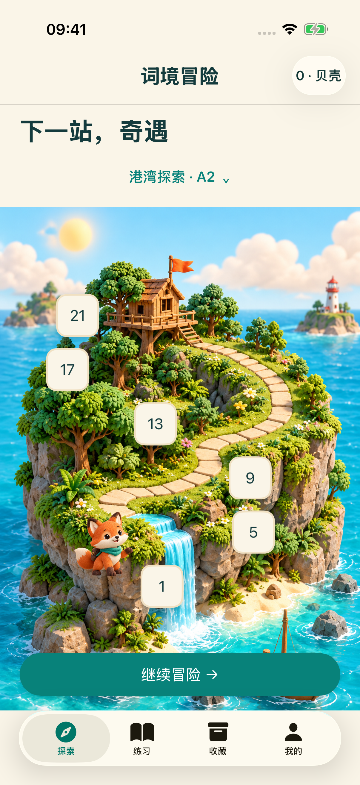
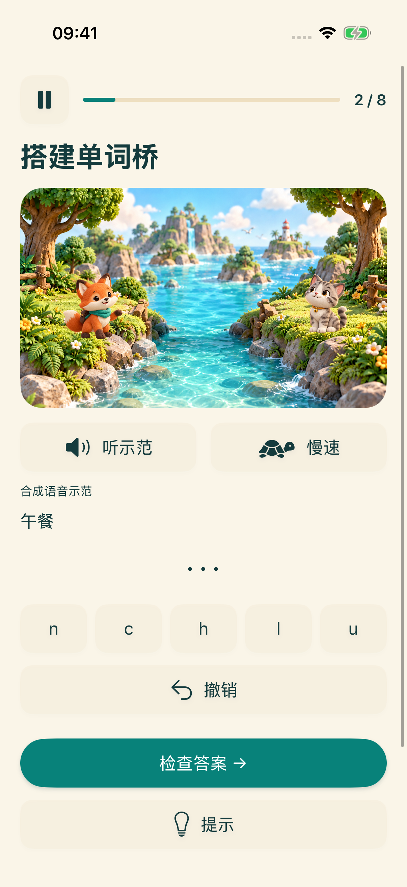
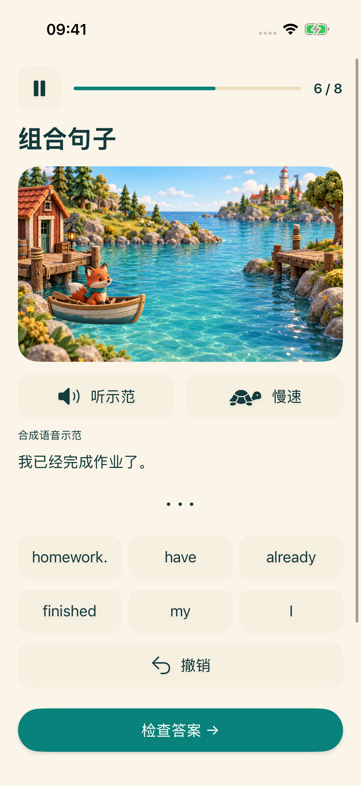
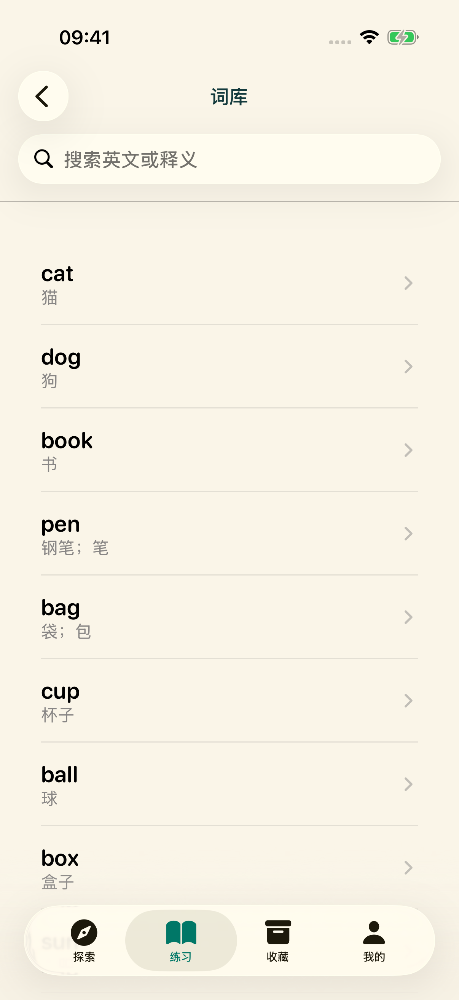

下一座小岛，等你出发
选择适合自己的学习阶段，沿着小岛路径，完成一段段英语练习。


选择适合自己的学习阶段，沿着小岛路径，完成一段段英语练习。

听系统语音示范，排列字母，在动手拼词中练习英语拼写。

把词语排好顺序，探索英语句子是怎样组成的。

探索词库，收藏喜欢的词语，回顾已经学过的内容。

录下来，听一遍，再试一次。兼容设备可选择设备端语音转写。这里提供练习与回放，不提供发音评分。
界面支持 16 种语言。题库释义目前提供英语与简体中文；所选语言没有译文时，会明确显示英语释义。
学习内容和进度保存在你的设备上，无需账号，也没有开发者提供的跨设备云同步。语音资源取决于设备配置；广告和隐私服务需要网络连接。
未满 18 岁或未选择年龄分组的档案不会启动广告流程。成人广告取决于隐私选择与可用性；观看奖励广告完全自愿。